Poster Reverse is a tool I run on my own computer. It reads someone else's poster as a skeleton: the grid, the type, the colours, the way an image meets the words. Then it rebuilds the poster with my own footage, photographs and text. The program measures; I judge and choose. Each poster here borrows one skeleton and replaces everything else.
海报倒推是一个在我自己电脑上运行的工具。它把别人的海报读成一副骨架：网格、字、颜色、图和字怎么碰在一起，再换成我自己的素材、照片和字重新搭起来。程序负责量，我负责判断和挑选。这里每一张都只借了一副骨架，其余全是我们自己的。
The original posters are not reproduced here; they belong to their designers and studios. Only my versions are shown. 原作海报不在这里展示，版权归原设计师和片方。这里只放我们的版本。
Posters for my film As Fables Go By, built from its footage and location photographs. 给我的影片《洋务运动》做的海报，图都来自片子的素材和现场照片。
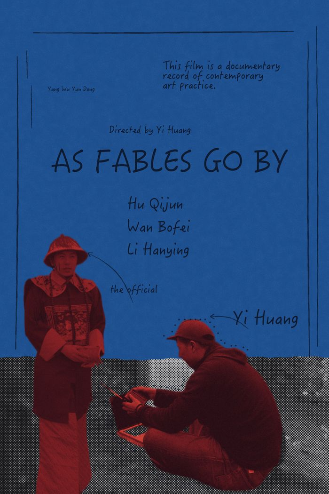
Layout after a poster for Rushmore (Wes Anderson, 1998)版式参考：Rushmore（Wes Anderson，1998）海报
A blue notebook page in pencil. A Qing official and a man working at Maxwell's grave, cut out in red duotone over a halftone strip of the graveyard wall.一页蓝纸上的铅笔笔记。清装官员和在麦克斯韦墓前对着电脑的人抠出来，调成红双色调，站在一条网点的墓园石墙上。
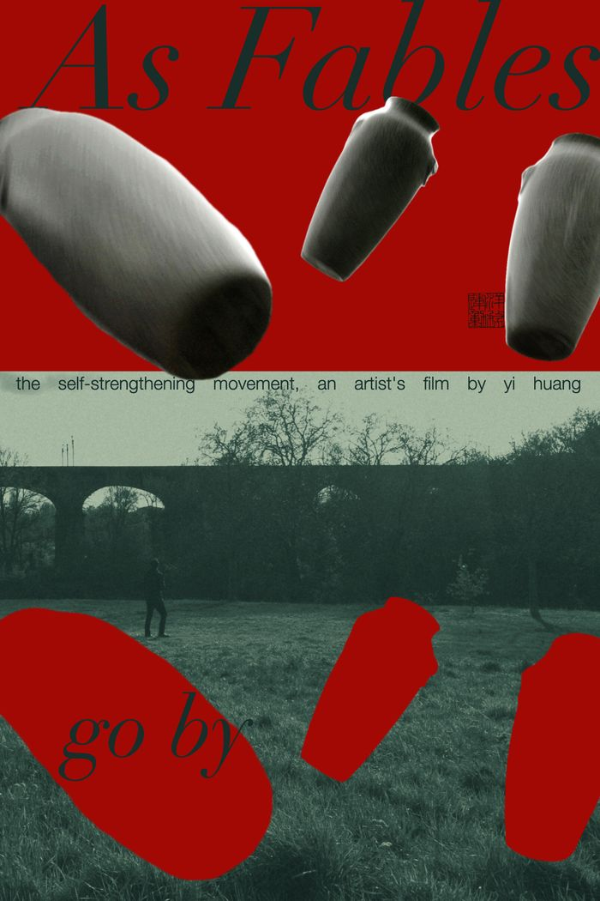
Layout after a typographic poster quoting “Insanity is doing the same thing over and over again”版式参考：一张以「Insanity is doing the same thing over and over again」为题的海报
One thrown jar, three times over: frames 100, 104 and 112 of a slow-motion shot. Their red shadows fall into the field below.同一只被抛起的罐子出现三次：慢镜头里的第 100、104、112 帧。它们的红影子落在下面的草地上。
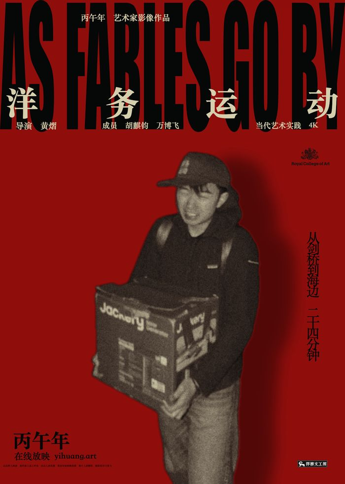
Layout after the 25th-anniversary poster for In the Mood for Love (Wong Kar-wai, 2000)版式参考：《花样年华》（王家卫，2000）25 周年海报
A full-width wall of type over four characters. A man carrying a box, cut out against a red wall.满宽的英文字墙压着「洋务运动」四个字。抱纸箱的人抠出来，站在一整面红墙前。
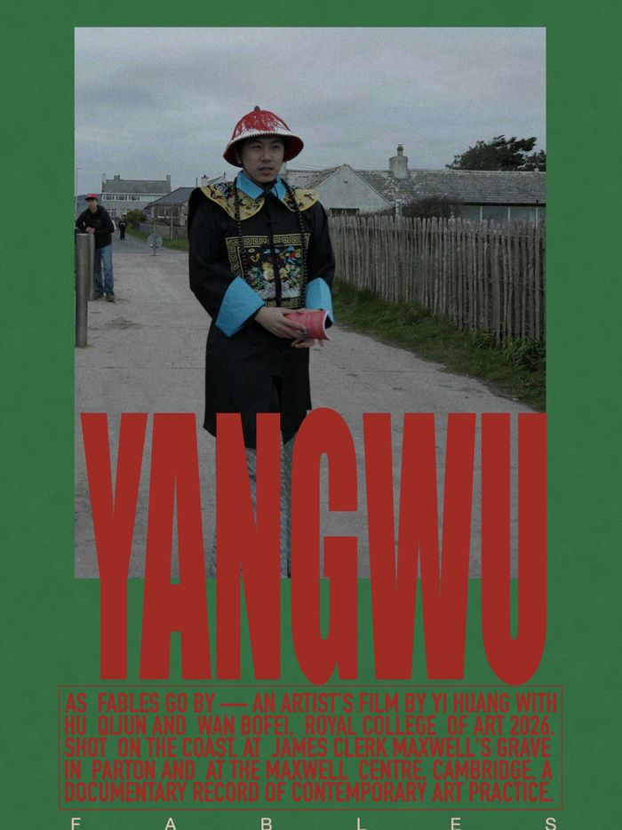
Layout after a MEXICO poster版式参考：一张 MEXICO 海报
A figure in Qing dress on a coastal path, over giant red letters, inside a green frame.清装的人站在海边的小路上，下面压着巨大的红字，外面一圈绿框。
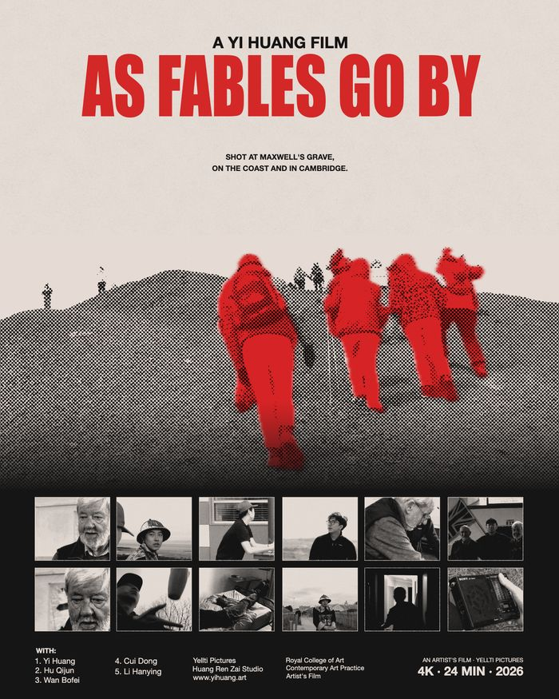
Layout after a poster for 12 Angry Men (Sidney Lumet, 1957)版式参考：《十二怒汉》（1957）海报
A line of walkers on a volcanic cone, turned red against grey scree; twelve frames from the film below.火山锥上的一队人调成红色，压在灰色的碎石上；下面是片子里的十二格画面。
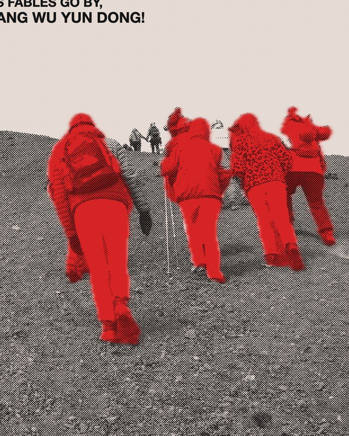
Layout after a two-colour poster for 12 Angry Men版式参考：另一张《十二怒汉》两色海报
The same walkers, in two inks.同一队人，只用两种墨。
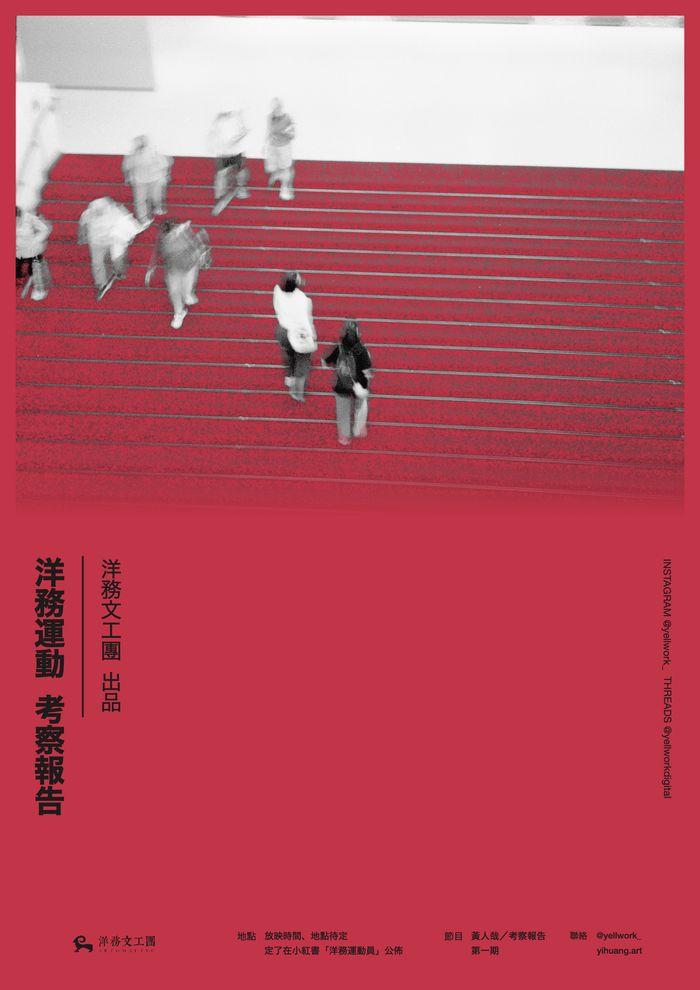
Layout after the Korean poster for After the Storm (Kore-eda Hirokazu, 2016)版式参考：《比海更深》（是枝裕和，2016）韩国版海报
Figures in black and white climbing red steps; the red ground carries only the vertical title.黑白的人走上红色的台阶；红底上只放竖排的片名。
Posters for Film Journal, my photographs on film from 2026. 给《胶片手记》做的海报，图是我 2026 年拍的胶片。
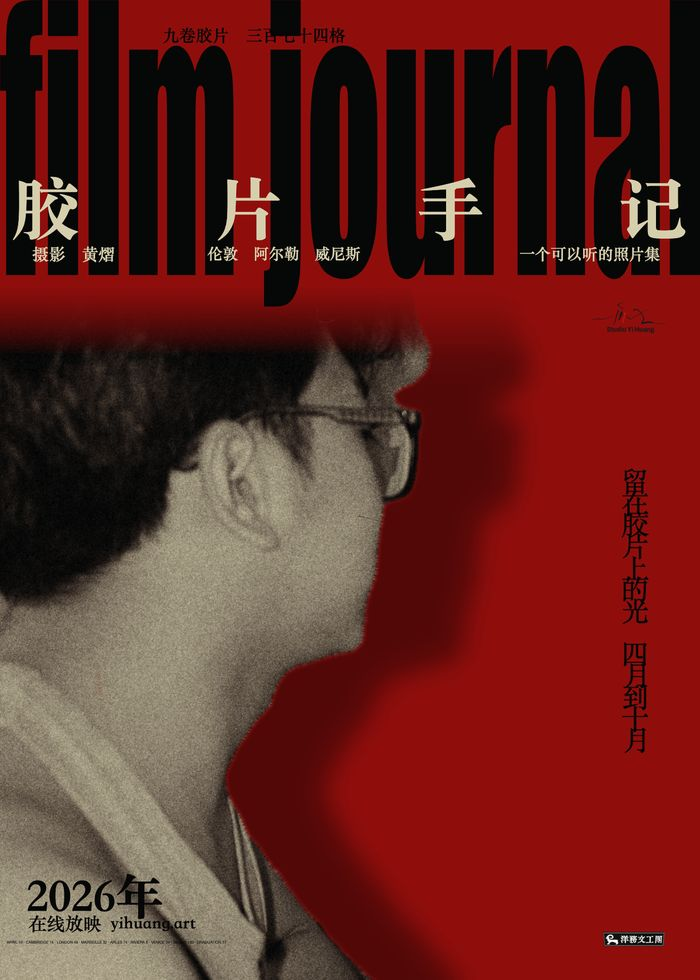
Layout after the 25th-anniversary poster for In the Mood for Love (Wong Kar-wai, 2000)版式参考：《花样年华》（王家卫，2000）25 周年海报
A wall of lower-case type; a profile from the rolls cut out against red.满宽的小写字墙；胶片里的一张侧脸抠出来，放在红墙前。
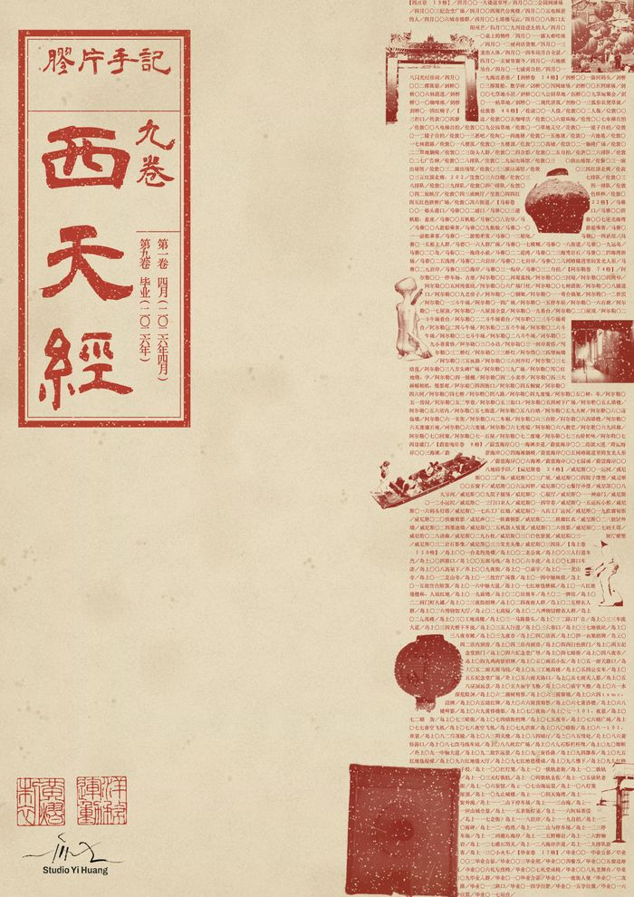
Layout after the general index cover of Gekkan Minpaku (National Museum of Ethnology, Japan)版式参考：《月刊みんぱく》总索引封面（日本国立民族学博物馆）
The index of nine rolls set as a wall of small type, flowing around objects from the photographs.九卷胶片的总索引排成一堵小字墙，贴着照片里的物件绕排。
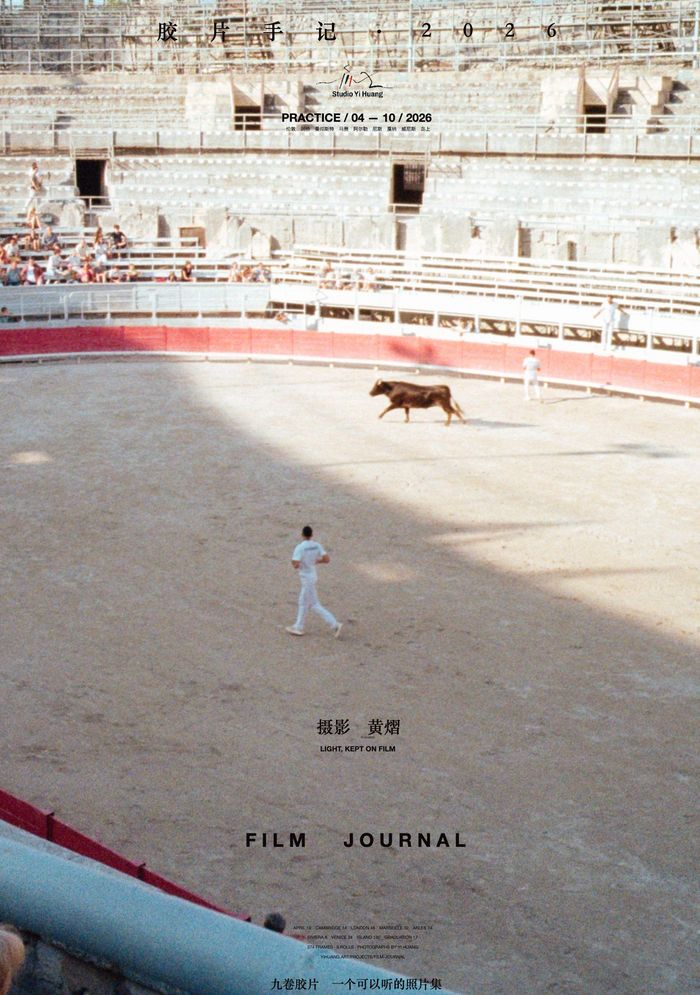
Layout after the 25th-anniversary 4K poster for Yi Yi (Edward Yang, 2000)版式参考：《一一》（杨德昌，2000）25 周年 4K 修复版海报
One small figure in the arena at Arles, a field of sand around him.阿尔勒斗牛场里一个小小的人，四周是大片沙地。
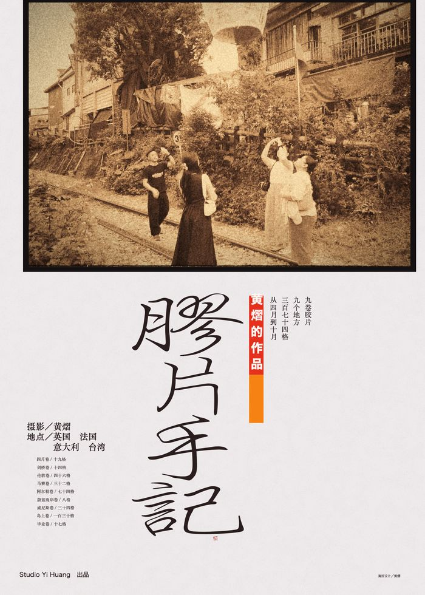
Layout after the poster for Dust in the Wind (Hou Hsiao-hsien, 1986)版式参考：《恋恋风尘》（侯孝贤，1986）海报
A sepia photograph framed on white paper, with a vertical title below.一张褪成棕黄的照片放在白纸的画框里，下面是竖排的片名。
这一类还没有。 Nothing in this style yet.